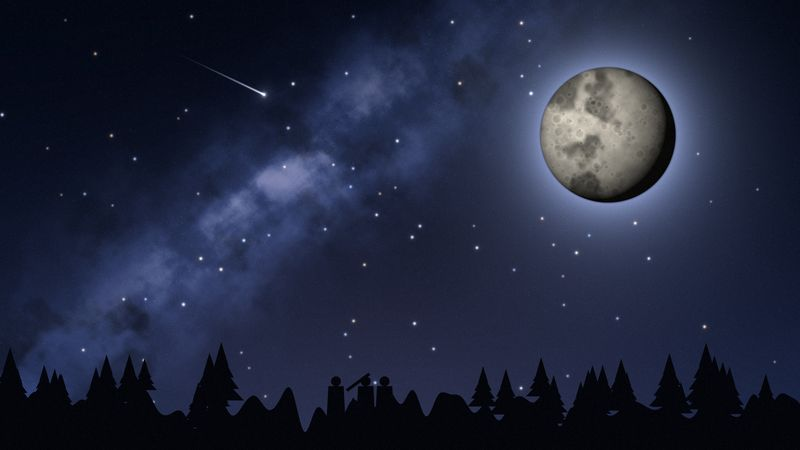
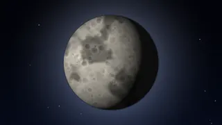
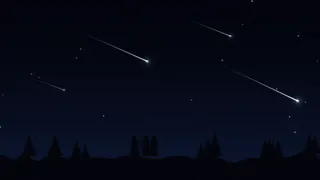
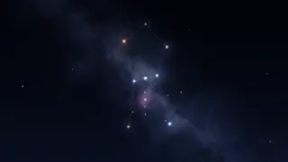

Góc Sao - CLB Thiên văn sinh viên
Hướng dẫn quan sát bầu trời cho người mới. Mỗi tháng một buổi quan sát miễn phí, mang ống nhòm theo là đủ.
Đăng ký buổi quan sátMới trên Góc Sao
-

Quan sát Mặt Trăng bằng ống nhòm
Cách chọn đêm, cách cầm ống nhòm cho vững và chỗ nào trên Mặt Trăng đáng nhìn nhất.
-

Mưa sao băng: xem thế nào cho đã
Không cần dụng cụ gì, chỉ cần chỗ tối, một tấm chiếu và kiên nhẫn khoảng một tiếng.
-

Tìm chòm sao Orion trong ba bước
Bắt đầu từ ba ngôi sao thẳng hàng, rồi lần ra Betelgeuse và Rigel.
Video giới thiệu (18 giây)
Đọc nội dung video giới thiệu
Video 18 giây, không có lời thoại, chỉ có nhạc nền. Nội dung theo từng đoạn:
- 0 - 3 giây: Nền trời đêm nhiều sao, biểu tượng trăng khuyết vàng cùng ngôi sao trắng hiện dần. Chữ trên hình: "Góc Sao". Nhạc nền êm bắt đầu.
- 3 - 7 giây: Mặt Trăng to dần, chuyển động rất chậm. Chữ: "Bạn đã bao giờ ngắm Mặt Trăng qua ống nhòm?"
- 7 - 11 giây: Sao Thổ có vành đai xoay nhẹ giữa nền sao. Chữ: "Hành tinh, chòm sao, mưa sao băng…"
- 11 - 15 giây: Vài vệt sao băng chạy chéo màn hình, dải Ngân Hà mờ phía sau, có tiếng vút nhẹ. Chữ: "Mỗi tháng một buổi quan sát miễn phí"
- 15 - 18 giây: Logo trăng khuyết và chữ "Góc Sao", bên dưới là lời kêu gọi màu vàng: "Đăng ký tại trang Liên hệ". Nhạc nhỏ dần rồi tắt.
Chúng mình chia sẻ gì
- Mặt Trăng: các pha, hố va chạm, cách ngắm bằng ống nhòm.
- Hành tinh: Sao Thổ, Sao Mộc và lúc nào nhìn thấy chúng.
- Mưa sao băng: lịch mưa sao băng trong năm và chỗ ngắm.
- Chòm sao: Orion và vài chòm dễ tìm cho người mới.
- Chụp ảnh thiên văn bằng điện thoại: giá đỡ, phơi sáng, đừng rung tay.